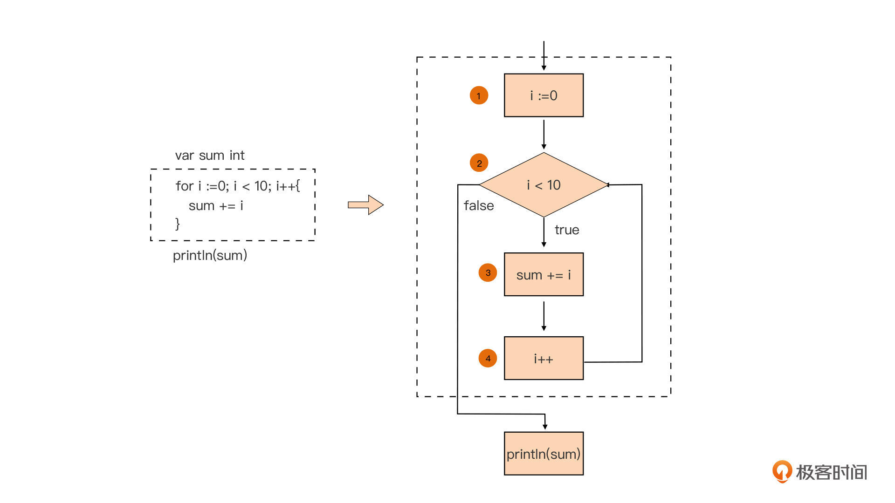

- 00 开篇词 这样入门Go，才能少走弯路.md.html
- 01 前世今生：你不得不了解的Go的历史和现状.md.html
- 02 拒绝“Hello and Bye”：Go语言的设计哲学是怎么一回事？.md.html
- 03 配好环境：选择一种最适合你的Go安装方法.md.html
- 04 初窥门径：一个Go程序的结构是怎样的？.md.html
- 05 标准先行：Go项目的布局标准是什么？.md.html
- 06 构建模式：Go是怎么解决包依赖管理问题的？.md.html
- 07 构建模式：Go Module的6类常规操作.md.html
- 08 入口函数与包初始化：搞清Go程序的执行次序.md.html
- 09 即学即练：构建一个Web服务就是这么简单.md.html
- 10 变量声明：静态语言有别于动态语言的重要特征.md.html
- 11 代码块与作用域：如何保证变量不会被遮蔽？.md.html
- 12 基本数据类型：Go原生支持的数值类型有哪些？.md.html
- 13 基本数据类型：为什么Go要原生支持字符串类型？.md.html
- 14 常量：Go在“常量”设计上的创新有哪些？.md.html
- 15 同构复合类型：从定长数组到变长切片.md.html
- 16 复合数据类型：原生map类型的实现机制是怎样的？.md.html
- 17 复合数据类型：用结构体建立对真实世界的抽象.md.html
- 18 控制结构：if的“快乐路径”原则.md.html
- 19 控制结构：Go的for循环，仅此一种.md.html
- 20 控制结构：Go中的switch语句有哪些变化？.md.html
- 21 函数：请叫我“一等公民”.md.html
- 22 函数：怎么结合多返回值进行错误处理？.md.html
- 23 函数：怎么让函数更简洁健壮？.md.html
- 24 方法：理解“方法”的本质.md.html
- 25 方法：方法集合与如何选择receiver类型？.md.html
- 26 方法：如何用类型嵌入模拟实现“继承”？.md.html
- 27 即学即练：跟踪函数调用链，理解代码更直观.md.html
- 28 接口：接口即契约.md.html
- 29 接口：为什么nil接口不等于nil？.md.html
- 30 接口：Go中最强大的魔法.md.html
- 31 并发：Go的并发方案实现方案是怎样的？.md.html
- 32 并发：聊聊Goroutine调度器的原理.md.html
- 33 并发：小channel中蕴含大智慧.md.html
- 34 并发：如何使用共享变量？.md.html
- 35 即学即练：如何实现一个轻量级线程池？.md.html
- 36 打稳根基：怎么实现一个TCP服务器？（上）.md.html
- 37 代码操练：怎么实现一个TCP服务器？（中）.md.html
- 38 成果优化：怎么实现一个TCP服务器？（下）.md.html
- 39 驯服泛型：了解类型参数.md.html
- 40 驯服泛型：定义泛型约束.md.html
- 41 驯服泛型：明确使用时机.md.html
- 元旦快乐 这是一份暂时停更的声明.md.html
- 加餐 作为Go Module的作者，你应该知道的几件事.md.html
- 加餐 如何拉取私有的Go Module？.md.html
- 加餐 我“私藏”的那些优质且权威的Go语言学习资料.md.html
- 加餐 聊聊Go 1.17版本的那些新特性.md.html
- 加餐 聊聊Go语言的指针.md.html
- 加餐 聊聊最近大热的Go泛型.md.html
- 大咖助阵 叶剑峰：Go语言中常用的那些代码优化点.md.html
- 大咖助阵 大明：Go泛型，泛了，但没有完全泛.md.html
- 大咖助阵 孔令飞：从小白到“老鸟”，我的Go语言进阶之路.md.html
- 大咖助阵 徐祥曦：从销售到分布式存储工程师，我与 Go 的故事.md.html
- 大咖助阵 曹春晖：聊聊 Go 语言的 GC 实现.md.html
- 大咖助阵 海纳：聊聊语言中的类型系统与泛型.md.html
- 期中测试 一起检验下你的学习成果吧.md.html
- 用户故事 罗杰：我的Go语言学习之路.md.html
- 结束语 和你一起迎接Go的黄金十年.md.html
- 结课测试 快来检验下你的学习成果吧！.md.html
- 捐赠
19 控制结构：Go的for循环，仅此一种
你好，我是Tony Bai。
上一节课，我们开始了对程序控制结构的学习，学习了分支结构中的if语句。上节课我们也说过，针对程序的分支结构，Go提供了if和switch-case两种语句形式。那你肯定在想，这节课肯定是要讲switch-case语句了吧！我不想按常规出牌，这一节课我们换换口味，挑战一下程序控制结构中最复杂的一款：循环结构。
为什么这么设置呢？因为我想让你能更早开始动手编写具有循环结构的Go代码。虽然switch-case分支结构也非常重要，但毕竟我们已经有了if分支语句的基础了，很多时候用if也可以替代switch-case，所以把它往后放放也没关系。
日常编码过程中，我们常常需要重复执行同一段代码，这时我们就需要循环结构来帮助我们控制程序的执行顺序。一个循环结构会执行循环体中的代码直到结尾，然后回到开头继续执行。 主流编程语言都提供了对循环结构的支持，绝大多数主流语言，包括C语言、C++、Java和Rust，甚至连动态语言Python还提供了不止一种的循环语句，但Go却只有一种，也就是for语句。
所以这节课，我们就来系统学习一下Go语言循环结构中的这一支独苗，for语句，聚焦于它的使用形式和常见坑点，让你能更快上手Go编码。
首先，我们就来认识一下Go语言中的for语句。
认识for语句的经典使用形式
C语言是很多现代编程语言的“祖先”，要学习Go语言中for语句的使用形式，我们要先看看C语言中for语句是怎么使用的。
下面这段C代码就是C语言中for语句的经典使用形式：
int i;
int sum = 0;
for (i = 0; i < 10; i++) {
sum += i;
}
printf("%d\n", sum);
这种形式也被其它后继语言延承了下来，Go语言的for语句也不例外，这段C代码在Go语言中的等价形式是这样的：
var sum int
for i := 0; i < 10; i++ {
sum += i
}
println(sum)
这种for语句的使用形式是Go语言中for循环语句的经典形式，也是我们在这节课要介绍的for循环语句的第一种形式。我们用一幅流程图来直观解释一下上面这句for循环语句的组成部分，以及各个部分的执行顺序：

从图中我们看到，经典for循环语句有四个组成部分（分别对应图中的①~④）。我们按顺序拆解一下这张图。
图中①对应的组成部分执行于循环体（③ ）之前，并且在整个for循环语句中仅会被执行一次，它也被称为循环前置语句。我们通常会在这个部分声明一些循环体（③ ）或循环控制条件（② ）会用到的自用变量，也称循环变量或迭代变量，比如这里声明的整型变量i。与if语句中的自用变量一样，for循环变量也采用短变量声明的形式，循环变量的作用域仅限于for语句隐式代码块范围内。
图中②对应的组成部分，是用来决定循环是否要继续进行下去的条件判断表达式。和if语句的一样，这个用于条件判断的表达式必须为布尔表达式，如果有多个判断条件，我们一样可以由逻辑操作符进行连接。当表达式的求值结果为true时，代码将进入循环体（③）继续执行，相反则循环直接结束，循环体（③）与组成部分④都不会被执行。
前面也多次提到了，图中③对应的组成部分是for循环语句的循环体。如果相关的判断条件表达式求值结构为true时，循环体就会被执行一次，这样的一次执行也被称为一次迭代（Iteration）。在上面例子中，循环体执行的动作是将这次迭代中变量i的值累加到变量sum中。
图中④对应的组成部分会在每次循环体迭代之后执行，也被称为循环后置语句。这个部分通常用于更新for循环语句组成部分①中声明的循环变量，比如在这个例子中，我们在这个组成部分对循环变量i进行加1操作。
现在你应该理解Go语言中的经典for语句的形式了吧？不过，Go语言的for循环也在C语言的基础上有一些突破和创新。具体一点，Go语言的for循环支持声明多循环变量，并且可以应用在循环体以及判断条件中，比如下面就是一个使用多循环变量的、稍复杂的例子：
for i, j, k := 0, 1, 2; (i < 20) && (j < 10) && (k < 30); i, j, k = i+1, j+1, k+5 {
sum += (i + j + k)
println(sum)
}
在这个例子中，我们声明了三个循环自用变量i、j和k，它们共同参与了循环条件判断与循环体的执行。
我们继续按四个组成部分分析这段代码。其实，除了循环体部分（③）之外，其余的三个部分都是可选的。比如下面代码中，我们省略了循环后置语句④，将对循环变量的更新操作放在了循环体中：
for i := 0; i < 10; {
i++
}
我们也可以省略循环前置语句。比如下面例子中，我们就没有使用前置语句声明循环变量，而是直接使用了已声明的变量i充当循环变量的作用：
i := 0
for ; i < 10; i++{
println(i)
}
当然，循环前置与后置语句也可以都省略掉，比如下面代码：
i := 0
for ; i < 10; {
println(i)
i++
}
细心的你可能已经发现了，虽然我们对前置语句或后置语句进行了省略，但经典for循环形式中的分号依然被保留着，你要注意这一点，这是Go语法的要求。
不过有一个例外，那就是当循环前置与后置语句都省略掉，仅保留循环判断条件表达式时，我们可以省略经典for循环形式中的分号。也就是说，我们可以将上面的例子写出如下形式：
i := 0
for i < 10 {
println(i)
i++
}
这种形式也是我们在日常Go编码中经常使用的for循环语句的第二种形式，也就是除了循环体之外，我们仅保留循环判断条件表达式。
不过看到这里，你可能就问了：“老师，前面你不是说过，除了循环体，其他组成部分都是可选项么？”
没错。当for循环语句的循环判断条件表达式的求值结果始终为true时，我们就可以将它省略掉了：
for {
// 循环体代码
}
这个for循环就是我们通常所说的“无限循环”。它的形式等价于：
for true {
// 循环体代码
}
或者：
for ; ; {
// 循环体代码
}
不过，虽然我这里给出这些等价形式，但在日常使用时，我还是建议你用它的最简形式，也就是for {...}，更加简单。
那么，无限循环是什么意思呢？是不是意味着代码始终在运行循环体而无法跳出来呢？不是的。这点你可以先思考一下，我们后面会讲。这里我们先继续看Go语言中for循环最常使用的第三种形式，for range。
for range循环形式
for range 循环形式是怎么一种形式呢？我们先来看一个例子。如果我们要使用for经典形式遍历一个切片中的元素，我们可以这样做：
var sl = []int{1, 2, 3, 4, 5}
for i := 0; i < len(sl); i++ {
fmt.Printf("sl[%d] = %d\n", i, sl[i])
}
在这个经典形式的例子中，我们使用循环前置语句中声明的循环变量i作为切片下标，逐一将切片中的元素读取了出来。不过，这样就有点麻烦了。其实，针对像切片这样的复合数据类型，还有Go原生的字符串类型（string），Go语言提供了一个更方便的“语法糖”形式：for range。现在我们就来写一个等价于上面代码的for range循环：
for i, v := range sl {
fmt.Printf("sl[%d] = %d\n", i, v)
}
我们看到，for range循环形式与for语句经典形式差异较大，除了循环体保留了下来，其余组成部分都“不见”了。其实那几部分已经被融合到for range的语义中了。
具体来说，这里的i和v对应的是经典for语句形式中循环前置语句的循环变量，它们的初值分别为切片sl的第一个元素的下标值和元素值。并且，隐含在for range语义中的循环控制条件判断为：是否已经遍历完sl的所有元素，等价于i < len(sl)这个布尔表达式。另外，每次迭代后，for range会取出切片sl的下一个元素的下标和值，分别赋值给循环变量i和v，这与for经典形式下的循环后置语句执行的逻辑是相同的。
for range语句也有几个常见“变种”，我们继续以上面对切片的迭代为例分析一下。
变种一：当我们不关心元素的值时，我们可以省略代表元素值的变量v，只声明代表下标值的变量i：
for i := range sl {
// ...
}
变种二：如果我们不关心元素下标，只关心元素值，那么我们可以用空标识符替代代表下标值的变量i。这里一定要注意，这个空标识符不能省略，否则就与上面的“变种一”形式一样了，Go编译器将无法区分：
for _, v := range sl {
// ...
}
变种三：到这里，你肯定要问：如果我们既不关心下标值，也不关心元素值，那是否能写成下面这样呢：
for _, _ = range sl {
// ...
}
这种形式在语法上没有错误，就是看起来不太优雅。Go核心团队早在Go 1.4版本中就提供了一种优雅的等价形式，你后续直接使用这种形式就好了：
for range sl {
// ...
}
好了，讲完了for range针对切片这种复合类型的各种形式后，我们再来看看for range应该如何用于对其他复合类型，或者是对string类型进行循环操作。for range针对不同复合数据类型进行循环操作时，虽然语义是相同的，但它声明的循环变量的含义会有所不同，我们有必要逐一看一下。
string类型
我们在第13讲讲解string类型时，就提到过如何通过for range对一个字符串类型变量进行循环操作。我们再通过下面的例子简单回顾一下：
var s = "中国人"
for i, v := range s {
fmt.Printf("%d %s 0x%x\n", i, string(v), v)
}
运行这个例子，输出结果是这样的：
0 中 0x4e2d
3 国 0x56fd
6 人 0x4eba
我们看到：for range对于string类型来说，每次循环得到的v值是一个Unicode字符码点，也就是rune类型值，而不是一个字节，返回的第一个值i为该Unicode字符码点的内存编码（UTF-8）的第一个字节在字符串内存序列中的位置。
另外我要在这里再次提醒你，使用for经典形式与使用for range形式，对string类型进行循环操作的语义是不同的，你可以回到13讲复习一下这块的内容。
map
在第16讲我们学习过，map就是一个键值对（key-value）集合，最常见的对map的操作，就是通过key获取其对应的value值。但有些时候，我们也要对map这个集合进行遍历，这就需要for语句的支持了。
但在Go语言中，我们要对map进行循环操作，for range是唯一的方法，for经典循环形式是不支持对map类型变量的循环控制的。下面是通过for range，对一个map类型变量进行循环操作的示例：
var m = map[string]int {
"Rob" : 67,
"Russ" : 39,
"John" : 29,
}
for k, v := range m {
println(k, v)
}
运行这个示例，我们会看到这样的输出结果：
John 29
Rob 67
Russ 39
通过输出结果我们看到：for range对于map类型来说，每次循环，循环变量k和v分别会被赋值为map键值对集合中一个元素的key值和value值。而且，map类型中没有下标的概念，通过key和value来循环操作map类型变量也就十分自然了。
channel
除了可以针对string、数组/切片，以及map类型变量进行循环操作控制之外，for range还可以与channel类型配合工作。
channel是Go语言提供的并发设计的原语，它用于多个Goroutine之间的通信，我们在后面的课程中还会详细讲解channel。当channel类型变量作为for range语句的迭代对象时，for range会尝试从channel中读取数据，使用形式是这样的：
var c = make(chan int)
for v := range c {
// ...
}
在这个例子中，for range每次从channel中读取一个元素后，会把它赋值给循环变量v，并进入循环体。当channel中没有数据可读的时候，for range循环会阻塞在对channel的读操作上。直到channel关闭时，for range循环才会结束，这也是for range循环与channel配合时隐含的循环判断条件。我们在后面讲解channel的部分，还会对for range与channel的配合做更细致地讲解，这一节课就不涉及那么多了，我们简单了解就可以。
到这里，我们已经对Go语言支持的所有for循环形式有了一个初步的了解。那么，在日常开发中，一旦我们执行for循环，是不是就只能等循环条件判断表达式求值为false时，才能离开循环呢？如果是前面提到的无限循环，我们是不是就会被一直困于循环之中呢？
不是的。日常开发中，出于算法逻辑的需要，我们可能会有中断当前循环体并继续下一次迭代的时候，也会有中断循环体并彻底结束循环语句的时候。针对这些情况，Go语言提供了continue语句和break语句。
带label的continue语句
首先，我们来看第一种场景。如果循环体中的代码执行到一半，要中断当前迭代，忽略此迭代循环体中的后续代码，并回到for循环条件判断，尝试开启下一次迭代，这个时候我们可以怎么办呢？我们可以使用continue语句来应对。
我们先来学习一下continue语句的使用方法，你看看下面这个代码示例：
var sum int
var sl = []int{1, 2, 3, 4, 5, 6}
for i := 0; i < len(sl); i++ {
if sl[i]%2 == 0 {
// 忽略切片中值为偶数的元素
continue
}
sum += sl[i]
}
println(sum) // 9
这段代码会循环遍历切片中的元素，把值为奇数的元素相加，然后存储在变量sum中。我们可以看到，在这个代码的循环体中，如果我们判断切片元素值为偶数，就使用continue语句中断当前循环体的执行，那么循环体下面的sum += sl[i]在这轮迭代中就会被忽略。代码执行流会直接来到循环后置语句i++，之后对循环条件表达式（i < len(sl)）进行求值，如果为true，将再次进入循环体，开启新一次迭代。
如果你学过C语言，你可能会说：这个continue与C语言中的continue也没有什么差别啊！别急，Go语言中的continue在C语言continue语义的基础上又增加了对label的支持。
label语句的作用，是标记跳转的目标。我们可以把上面的代码改造为使用label的等价形式：
func main() {
var sum int
var sl = []int{1, 2, 3, 4, 5, 6}
loop:
for i := 0; i < len(sl); i++ {
if sl[i]%2 == 0 {
// 忽略切片中值为偶数的元素
continue loop
}
sum += sl[i]
}
println(sum) // 9
}
你可以看到，在这段代码中，我们定义了一个label：loop，它标记的跳转目标恰恰就是我们的for循环。也就是说，我们在循环体中可以使用continue+ loop label的方式来实现循环体中断，这与前面的例子在语义上是等价的。不过这里仅仅是一个演示，通常我们在这样非嵌套循环的场景中会直接使用不带label的continue语句。
而带label的continue语句，通常出现于嵌套循环语句中，被用于跳转到外层循环并继续执行外层循环语句的下一个迭代，比如下面这段代码：
func main() {
var sl = [][]int{
{1, 34, 26, 35, 78},
{3, 45, 13, 24, 99},
{101, 13, 38, 7, 127},
{54, 27, 40, 83, 81},
}
outerloop:
for i := 0; i < len(sl); i++ {
for j := 0; j < len(sl[i]); j++ {
if sl[i][j] == 13 {
fmt.Printf("found 13 at [%d, %d]\n", i, j)
continue outerloop
}
}
}
}
在这段代码中，变量sl是一个元素类型为[]int的切片（二维切片），其每个元素切片中至多包含一个整型数13。main函数的逻辑就是在sl的每个元素切片中找到13这个数字，并输出它的具体位置信息。
那这要怎么查找呢？一种好的实现方式就是，我们只需要在每个切片中找到13，就不用继续在这个切片的剩余元素中查找了。
我们用for经典形式来实现这个逻辑。面对这个问题，我们要使用嵌套循环，具体来说就是外层循环遍历sl中的元素切片，内层循环遍历每个元素切片中的整型值。一旦内层循环发现13这个数值，我们便要中断内层for循环，回到外层for循环继续执行。
如果我们用不带label的continue能不能完成这一功能呢？答案是不能。因为它只能中断内层循环的循环体，并继续开启内层循环的下一次迭代。而带label的continue语句是这个场景下的“最佳人选”，它会直接结束内层循环的执行，并回到外层循环继续执行。
这一行为就好比在外层循环放置并执行了一个不带label的continue语句。它会中断外层循环中当前迭代的执行，执行外层循环的后置语句（i++），然后再对外层循环的循环控制条件语句进行求值，如果为true，就将继续执行外层循环的新一次迭代。
看到这里，一些学习过goto语句的同学可能就会问了，如果我把上述代码中的continue换成goto语句，是否也可以实现同样的效果？
答案是否定的！一旦使用goto跳转，那么不管是内层循环还是外层循环都会被终结，代码将会从outerloop这个label处，开始重新执行我们的嵌套循环语句，这与带label的continue的跳转语义是完全不同的。
我还要特别提醒你，goto是一种公认的、难于驾驭的语法元素，应用goto的代码可读性差、代码难于维护还易错。虽然Go语言保留了goto，但在我们这个入门课中，我们不会系统讲解goto语句。
break语句的使用
在前面的讲解中，你可能也注意到了，无论带不带label，continue语句的本质都是继续循环语句的执行。但日常编码中，我们还会遇到一些场景，在这些场景中，我们不仅要中断当前循环体迭代的进行，还要同时彻底跳出循环，终结整个循环语句的执行。面对这样的场景，continue语句就不再适用了，Go语言为我们提供了break语句来解决这个问题。
我们先来看下面这个示例中break语句的应用：
func main() {
var sl = []int{5, 19, 6, 3, 8, 12}
var firstEven int = -1
// 找出整型切片sl中的第一个偶数
for i := 0; i < len(sl); i++ {
if sl[i]%2 == 0 {
firstEven = sl[i]
break
}
}
println(firstEven) // 6
}
这段代码逻辑很容易理解，我们通过一个循环结构来找出切片sl中的第一个偶数，一旦找到就不需要继续执行后续迭代了。这个时候我们就通过break语句跳出了这个循环。
和continue语句一样，Go也break语句增加了对label的支持。而且，和前面continue语句一样，如果遇到嵌套循环，break要想跳出外层循环，用不带label的break是不够，因为不带label的break仅能跳出其所在的最内层循环。要想实现外层循环的跳出，我们还需给break加上label。我们来看一个具体的例子：
var gold = 38
func main() {
var sl = [][]int{
{1, 34, 26, 35, 78},
{3, 45, 13, 24, 99},
{101, 13, 38, 7, 127},
{54, 27, 40, 83, 81},
}
outerloop:
for i := 0; i < len(sl); i++ {
for j := 0; j < len(sl[i]); j++ {
if sl[i][j] == gold {
fmt.Printf("found gold at [%d, %d]\n", i, j)
break outerloop
}
}
}
}
这个例子和我们前面讲解的、带label的continue语句的例子很像，main函数的逻辑就是，在sl这个二维切片中找到38这个数字，并输出它的位置信息。整个二维切片中至多有一个值为38的元素，所以只要我们通过嵌套循环发现了38，我们就不需要继续执行这个循环了。这时，我们通过带有label的break语句，就可以直接终结外层循环，从而从复杂多层次的嵌套循环中直接跳出，避免不必要的算力资源的浪费。
好了，到这里，关于Go语言中for语句的相关语法，我们已经全部讲完了，通过for语句我们可以实现重复执行同一段代码的逻辑。针对原生字符串类型以及一些复合数据类型，诸如数组/切片、map、channel等，Go还提供了for range“语法糖”形式来简化循环结构的编写。
不过，我们也看到，相较于分支结构，以for语句为代表的循环结构的逻辑要复杂许多。在日常编码实践中，我们也会遇到一些与for循环语句相关的常见问题，下面我们就聊聊究竟有哪些与for相关的常见“坑”点。
for语句的常见“坑”与避坑方法
for语句的常见“坑”点通常和for range这个“语法糖”有关。虽然for range的引入提升了Go语言的表达能力，也简化了循环结构的编写，但for range也不是“免费的午餐”，初学者在享用这道美味时，经常会遇到一些问题，下面我们就来看看这些常见的问题。
问题一：循环变量的重用
我们前面说过，for range形式的循环语句，使用短变量声明的方式来声明循环变量，循环体将使用这些循环变量实现特定的逻辑，但你在刚开始学习使用的时候，可能会发现循环变量的值与你之前的“预期”不符，比如下面这个例子：
func main() {
var m = []int{1, 2, 3, 4, 5}
for i, v := range m {
go func() {
time.Sleep(time.Second * 3)
fmt.Println(i, v)
}()
}
time.Sleep(time.Second * 10)
}
这个示例是对一个整型切片进行遍历，并且在每次循环体的迭代中都会创建一个新的Goroutine（Go中的轻量级协程），输出这次迭代的元素的下标值与元素值。关于Goroutine创建和使用的知识我们在后面课程中会有详细的讲解。
现在我们继续看这个例子，作为一个初学者，我们预期的输出结果可能是这样的：
0 1
1 2
2 3
3 4
4 5
那实际输出真的是这样吗？我们实际运行输出一下：
4 5
4 5
4 5
4 5
4 5
我们看到，Goroutine中输出的循环变量，也就是i和v的值都是for range循环结束后的最终值，而不是各个Goroutine启动时变量i和v的值，与我们最初的“预期”不符，这是为什么呢？
这是因为我们最初的“预期”本身就是错的。这里，初学者很可能会被for range语句中的短声明变量形式“迷惑”，简单地认为每次迭代都会重新声明两个新的变量i和v。但事实上，这些循环变量在for range语句中仅会被声明一次，且在每次迭代中都会被重用。
你还能想起第11讲中关于控制语句的隐式代码块的知识点吗？基于隐式代码块的规则，我们可以将上面的for range语句做一个等价转换，这样可以帮助你理解for range的工作原理。等价转换后的结果是这样的：
func main() {
var m = []int{1, 2, 3, 4, 5}
{
i, v := 0, 0
for i, v = range m {
go func() {
time.Sleep(time.Second * 3)
fmt.Println(i, v)
}()
}
}
time.Sleep(time.Second * 10)
}
通过等价转换后的代码，我们可以清晰地看到循环变量i和v在每次迭代时的重用。而Goroutine执行的闭包函数引用了它的外层包裹函数中的变量i、v，这样，变量i、v在主Goroutine和新启动的Goroutine之间实现了共享，而i, v值在整个循环过程中是重用的，仅有一份。在for range循环结束后，i = 4, v = 5，因此各个Goroutine在等待3秒后进行输出的时候，输出的是i, v的最终值。
那么如何修改代码，可以让实际输出和我们最初的预期输出一致呢？我们可以为闭包函数增加参数，并且在创建Goroutine时将参数与i、v的当时值进行绑定，看下面的修正代码：
func main() {
var m = []int{1, 2, 3, 4, 5}
for i, v := range m {
go func(i, v int) {
time.Sleep(time.Second * 3)
fmt.Println(i, v)
}(i, v)
}
time.Sleep(time.Second * 10)
}
运行修改后的例子代码，输出结果是这样的：
0 1
1 2
2 3
3 4
4 5
这回的输出结果与我们的预期就是一致的了。不过这里你要注意：你执行这个程序的输出结果的行序，可能与我的不同，这是由Goroutine的调度所决定的，我们在后面课程中会详细讲解。
问题二：参与循环的是range表达式的副本
前面我们学过了，在for range语句中，range后面接受的表达式的类型可以是数组、指向数组的指针、切片、字符串，还有map和channel（需具有读权限）。我们以数组为例来看一个简单的例子：
func main() {
var a = [5]int{1, 2, 3, 4, 5}
var r [5]int
fmt.Println("original a =", a)
for i, v := range a {
if i == 0 {
a[1] = 12
a[2] = 13
}
r[i] = v
}
fmt.Println("after for range loop, r =", r)
fmt.Println("after for range loop, a =", a)
}
这个例子说的是对一个数组a的元素进行遍历操作，当处理下标为0的元素时，我们修改了数组a的第二个和第三个元素的值，并且在每个迭代中，我们都将从a中取得的元素值赋值给新数组r。我们期望这个程序会输出如下结果：
original a = [1 2 3 4 5]
after for range loop, r = [1 12 13 4 5]
after for range loop, a = [1 12 13 4 5]
但实际运行该程序的输出结果却是：
original a = [1 2 3 4 5]
after for range loop, r = [1 2 3 4 5]
after for range loop, a = [1 12 13 4 5]
我们原以为在第一次迭代过程，也就是i = 0时，我们对a的修改(a[1] =12,a[2] = 13)会在第二次、第三次迭代中被v取出，但从结果来看，v取出的依旧是a被修改前的值：2和3。
为什么会是这种情况呢？原因就是参与for range循环的是range表达式的副本。也就是说，在上面这个例子中，真正参与循环的是a的副本，而不是真正的a。
为了方便你理解，我们将上面的例子中的for range循环，用一个等价的伪代码形式重写一下：
for i, v := range a' { //a'是a的一个值拷贝
if i == 0 {
a[1] = 12
a[2] = 13
}
r[i] = v
}
现在真相终于揭开了：这个例子中，每次迭代的都是从数组a的值拷贝a’中得到的元素。a’是Go临时分配的连续字节序列，与a完全不是一块内存区域。因此无论a被如何修改，它参与循环的副本a’依旧保持原值，因此v从a’中取出的仍旧是a的原值，而不是修改后的值。
那么应该如何解决这个问题，让输出结果符合我们前面的预期呢？我们前面说过，在Go中，大多数应用数组的场景我们都可以用切片替代，这里我们也用切片来试试看：
func main() {
var a = [5]int{1, 2, 3, 4, 5}
var r [5]int
fmt.Println("original a =", a)
for i, v := range a[:] {
if i == 0 {
a[1] = 12
a[2] = 13
}
r[i] = v
}
fmt.Println("after for range loop, r =", r)
fmt.Println("after for range loop, a =", a)
}
你可以看到，在range表达式中，我们用了a[:]替代了原先的a，也就是将数组a转换为一个切片，作为range表达式的循环对象。运行这个修改后的例子，结果是这样的：
original a = [1 2 3 4 5]
after for range loop, r = [1 12 13 4 5]
after for range loop, a = [1 12 13 4 5]
我们看到输出的结果与最初的预期终于一致了，显然用切片能实现我们的要求。
那切片是如何做到的呢？在之前的第15讲中，我们学习过，切片在Go内部表示为一个结构体，由（array, len, cap）组成，其中array是指向切片对应的底层数组的指针，len是切片当前长度，cap为切片的最大容量。
所以，当进行range表达式复制时，我们实际上复制的是一个切片，也就是表示切片的结构体。表示切片副本的结构体中的array，依旧指向原切片对应的底层数组，所以我们对切片副本的修改也都会反映到底层数组a上去。而v再从切片副本结构体中array指向的底层数组中，获取数组元素，也就得到了被修改后的元素值。
问题三：遍历map中元素的随机性
根据上面的讲解，当map类型变量作为range表达式时，我们得到的map变量的副本与原变量指向同一个map（具体原因你可以看第16讲）。如果我们在循环的过程中，对map进行了修改，那么这样修改的结果是否会影响后续迭代呢？这个结果和我们遍历map一样，具有随机性。
比如我们来看下面这个例子，在map循环过程中，当counter值为0时，我们删除了变量m中的一个元素：
var m = map[string]int{
"tony": 21,
"tom": 22,
"jim": 23,
}
counter := 0
for k, v := range m {
if counter == 0 {
delete(m, "tony")
}
counter++
fmt.Println(k, v)
}
fmt.Println("counter is ", counter)
如果我们反复运行这个例子多次，会得到两个不同的结果。当k=“tony”作为第一个迭代的元素时，我们将得到如下结果：
tony 21
tom 22
jim 23
counter is 3
否则，我们得到的结果是这样的：
tom 22
jim 23
counter is 2
如果我们在针对map类型的循环体中，新创建了一个map元素项，那这项元素可能出现在后续循环中，也可能不出现：
var m = map[string]int{
"tony": 21,
"tom": 22,
"jim": 23,
}
counter := 0
for k, v := range m {
if counter == 0 {
m["lucy"] = 24
}
counter++
fmt.Println(k, v)
}
fmt.Println("counter is ", counter)
这个例子的执行结果也会有两个，
tony 21
tom 22
jim 23
lucy 24
counter is 4
或：
tony 21
tom 22
jim 23
counter is 3
考虑到上述这种随机性，我们日常编码遇到遍历map的同时，还需要对map进行修改的场景的时候，要格外小心。
小结
好了，今天的课讲到这里就结束了，现在我们一起来回顾一下吧。
在这一讲中，我们讲解了程序控制结构中最复杂的一种：循环控制结构。和其他主流编程语言不同，Go语言仅提供了一种循环结构语句：for语句。for语句的这种践行“做一件事仅有一种方法”理念的作法恰是Go语言崇尚“简单”的设计哲学的具体体现。
我们首先学习了for语句的经典形式：for preStmt; condition; postStmt { … }，你要注意for语句经典形式的四个组成部分，分别是循环前置语句、循环判断表达式、循环体与循环后置语句，也要注意这四个部分的执行顺序。而且，这四部分中，除了循环体，其它三个组成部分都是可选的。我们可以根据实际情况选择省略某个部分。
如果我们只保留循环判断条件表达式，我们就得到了for循环语句经常使用的第二种形式：for condition {...}。如果循环判断条件表达式求值结果始终为true，我们就可以将for循环语句写成for {...}的形式，这种形式也被称为“无限循环”。
而且，针对string类型以及一些复合数据类型，比如数组/切片、map以及channel等，Go提供了使用更为便捷的“语法糖”for range形式。for range形式与for语句经典形式差异较大，除了循环体保留了下来，其它几部分融合到for range的语义中了。for range语句形式也有几个“变种”，你要注意的是，如果仅需要代表元素值的循环变量，不需要代表下标值或key的循环变量，我们也需要使用空标识符占位。
此外，Go语言提供了continue语句与break语句用于显式中断当前循环体的执行，两个语句不同之处在于continue会继续后续迭代的执行，而break将终结整个for语句的执行。Go语言还支持在continue与break关键字后面加label的方式，这种方式常用于有嵌套循环的场景中，它们可以帮助程序中断内层循环的执行，返回外层循环继续执行下一个外层循环迭代，或彻底结束整个嵌套循环的执行。
最后，for语句在日常使用中有一些常见的问题需要你格外注意，包括循环变量重用、range表达式副本参与循环、map类型遍历的随机性，等等，你一样要深刻理解，才能在日常编码时少走弯路。
思考题
在“参与循环的是range表达式的副本”这一部分中，我们用切片替换了数组，实现了我们预期的输出，我想让你思考一下，除了换成切片这个方案之外，还有什么方案也能实现我们预期的输出呢？
欢迎你把这节课分享给更多对Go语言循环结构感兴趣的朋友。我是Tony Bai，我们下节课见。
© 2019 - 2023 Liangliang Lee. Powered by gin and hexo-theme-book.